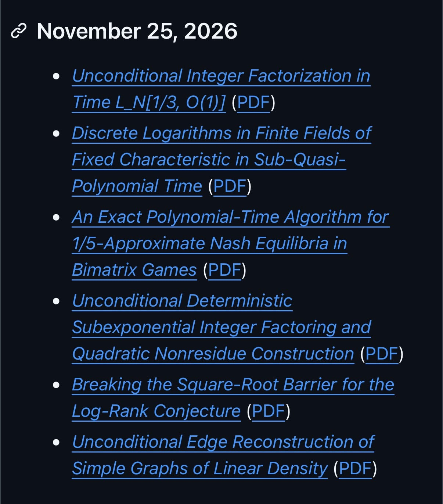

2026년 11월 20일을 기점으로 앤트로픽, 구글, 오픈AI가 수학난제가 미친듯이 풀어재끼는 중 ㄷㄷㄷㄷㄷ

2026년 11월 20일을 기점으로 앤트로픽, 구글, 오픈AI가 수학난제가 미친듯이 풀어재끼는 중 ㄷㄷㄷㄷㄷ
뭐야 분명 몇개월 간격이었잖아. 왜 급발진이야
5일동안 오픈ai 구글 앤트로픽이 18개 난제 해결함ㅋㅋㅋ
그냥 난제도 아니고 하나하나가.....
곱셈으로 상승하는 지수발전을 아시오?
지수적 발전
초지능 진입
인류의 멸망
모르겠다 이제. 걍 싹다 침수되자
그럼 주가도 좀 올려라!!!!!!!!ㅠㅠ
코인 좃됬노
코인 왜?
양자컴퓨터나오면 코인지갑들 다 털리니깐 그런듯
코인이 털리기 전에 은행보안이 먼저 뚫릴 거란 생각은 안드나?
비트코인의 양자컴퓨터 위험을 말하면 “양자컴퓨터가 비트코인을 뚫을 정도면 은행이고 인터넷이고 전부 박살난다”가 대표적인 반론이다. 그런데 이건 암호학적 취약성과 실제 공격 시나리오를 구분하지 못하는 소리다. 세상의 모든 암호가 위험해진다고 해서 모든 시스템이 동시에, 똑같은 수준으로 털리는 게 아니다.
초기 양자컴퓨터의 연산 자원은 제한적일 가능성이 높다. 공개키 하나에서 개인키를 복구하는 데 며칠, 심지어 6개월이 걸린다고 가정해 보자. 공격자는 표적을 선택해야 한다. 다중 인증, 이상거래 탐지, 계좌 동결, 사법적 추적과 회수 절차까지 갖춘 은행을 공격하겠는가? 아니면 공개키만 뚫으면 거액의 자산을 직접 이동시킬 수 있고, 거래를 되돌릴 중앙기관조차 없는 비트코인을 공격하겠는가?
은행의 암호를 깨는 것과 은행 돈을 훔치는 것은 전혀 다른 문제지만, 비트코인에서는 개인키 복구가 곧 자산 탈취로 이어질 수 있다.
더 웃긴 건 비트코인은 공격할 표적까지 친절하게 공개하고 있다는 사실이다. 초기 P2PK 지갑, 공개키가 노출된 주소, 탭루트 출력 등은 충분한 성능의 양자컴퓨터가 등장하면 공격 대상이 될 수 있다. 공격자는 블록체인을 뒤져 가치가 큰 표적부터 고르면 된다. 특히 분실된 코인이나 사토시의 것으로 추정되는 오래된 코인은 소유자가 양자내성 주소로 옮길 수 있을지조차 불확실하다. 은행을 털려면 여러 보안 계층을 돌파해야하고 턴 이후에도 은행은 롤백, 자산동결등이 가능하지만, 비트코인은 특정 조건에서 암호학적 자물쇠 하나를 깨는 것만으로 충분하다.
6개월의 시간을 소모하여 개인키 1개를 뚫을 수 있다고 했을때 90조에 가까운 사토시 나카모토의 지갑이 표적이 될까 아니면 주기적으로 암호를 교체하여 이미 안쓰는 암호가 되었을 수도 있는 은행권을 타겟으로 할까?
문제는 비트코인은 자산을 옮기는 순간 그 지갑을 주시하고 있던 고래들이 가만히 안 놔둔다는거. 공격자가 그 비트코인을 옮겨서 거래소에 팔 때까지 가격이 가만히 있을까?
그리고 그런 암호를 뚫었을때 가장 높은 가치를 얻을수있는건 돈, 비트코인도 아니고 상대 기업이나 국가기관의 기밀임. 비트코인에 그 찬스를 소비하면 90조짜리의 수익도 온전치 못할것이고 나한테 이런 무기가 있다는걸 전세계에 전부 공개해버리는 셈임. 6개월동안 양자컴퓨터 돌리는 비용은 회수할 수 있을까?
결론:
비트코인 소유자: ㅈ됨
해커: ㅈ됨
그러므로 공격할 이유가 아주 없지는 않겠지만 1번째 우선순위는 아니라는거
숏치고 사토시 지갑에서 옮기는 연출만해도 충분함
이 위협에 대해 길게 이야기하면
https://www.dogdrip.net/694938625
IBIT 블랙록은 저런 상황이 발생하면 어떤게 진짜
비트코인인지 지들이 결정한다고 etf 설명서에 써있음
비트코인은 수많은사람들이 지갑의 이동을 볼수 있어서 공격자가 비트코인을 옮기는순간(해킹당하는 순간) 비트코인 가격은 0원에 수렴하게됨. 안전한 현금을 확보할수 있는 은행이 낫지
숏치고 사토시 지갑에서 옮기는 연출만해도 충분함
이 위협에 대해 길게 이야기하면
https://www.dogdrip.net/694938625
IBIT 블랙록은 저런 상황이 발생하면 어떤게 진짜
비트코인인지 지들이 결정한다고 etf 설명서에 써있음
두 소수의 곱을 계산하는건 순식간이지만 충분히 큰수가 어떤 두 소수의 곱인지 알기 어려운게 근간 아니었나 솔루션이 궁금하네
지금은 5일이지 내년이면 5분에 10개꼴임 ㅋㅋㅋㅋ
근데 진짜로 푼건지 아닌지는 어케 확인함?
lean이라고 코드가 있는데 그걸로 원하는걸 증명하는거임. 기존 이미 증명된 수식이나 정의 갖고 지지고 볶으면 원하는 수식 나오면 됨. 사실상 옛날 수학 시간때 수식, 등호를 이용해서 증명하는거랑 비슷함.
문제는 너무 길어서 사람이 읽을 수 없음, 근데 돌려보면 통과함.
lean을 통과하면 매우 높은 확률로 일단 풀긴 한 걸로 취급.
이해는 그 다음.
그래서 전에 openAI가 400개였나 난제 공개 했을 때, 몇개 철회됐는데 그것들은 lean이 없는 거였음. lean 됐다는 말 있으면 됐다고 두고 생각해도 되고, lean은 없다고 하면 틀릴 가능성을 생각하고 보면 되는 듯.
자 고기들아 빨리 알기쉽게 풀이영상 해다오
뭔가 무서운데;;;
일단 소인수 분해 관련된 논문은 일반적으로 생각하는 그런 내용이 아님. 잠깐 살펴보니 양자컴퓨터 개발되면 소인수분해 빠르게 된다는 그런 비스무리한 류의 내용임.
다큰낙타
곧있으면 남은 난제 다풀고 지가 새로운 난제 만들기세네
아니 시이발 이새끼들이 쓰는 모델은 한 gpt 9.2라도 되나 뭐 이렇게 잘풀어 ㅅㅂ ㅋㅋㅋㅋㅋ
수학자들은 기분 더러울듯
뭐 어떰 모든 분야에서 ai가 대체하니마니 듣던거 이제서야 듣는건데
딴 분야는 듣기만 했던거고(신입고용은 안 할지 몰라도 분야 자체는 아직 대체 안됨)
수학은 실제 영향이 있는데


하 거의 다 풀어놨는데 허무하네..
하...나도 1시간전에 풀었는데 늦었네
특이점이 오고있나보네
수학자들 현타 씨게 오겠는데?
평생 바쳐서 노력한게 이제는 AI가 푼거 맞는지 검증하는 사람이 되버렸네
이제 AI도 어려울 난제 만드는거에 집중해야하나
개발자랑 똑같아짐ㅋㅋ AI로 문제 만들고 AI로 증명 만들고 AI로 검증하고ㅋㅋㅋㅋㅋㅋㅋㅋㅋㅋㅋ
요즘 현타 안온 사람 찾기도 어렵지
두번째에 있는 이산로그 문제도 암호화에서 많이 의존하는 어려운 문제임ㅋㅋ 옛날에 양자컴이 아니라 AI로는 암호화 못 푼다다고 댓글 단 적 있는데 머쓱해지네ㅋㅋ
수학자들 첫경험 NTR 교배프레스 수붕이 작은 뇌로는 닿지도 않던곳 오옥! ♡ 이렇게 계속 박아대면 헐렁해져 풀려버렷 대다네에에엣 ♡ 그걸 보면서 패배자위를해야하는 수학자들의 쾌감 캬..
모든 과학기술의 기반인 수학부터 조져놓고 다음 테크를 탄다 이건가
1년뒤 : 난제 더 없나요?
아씨 풀기 5분전이였는데
9주전 릴스에다 자칭 ai전문가라고 온갖ai들에다 떡상이다 퇴물이다 그러고있는데
ai를 진짜 ㅈ도 모르는구나 싶더라ㅋㅋ
인류문명의 퀀텀점프인가?
야하